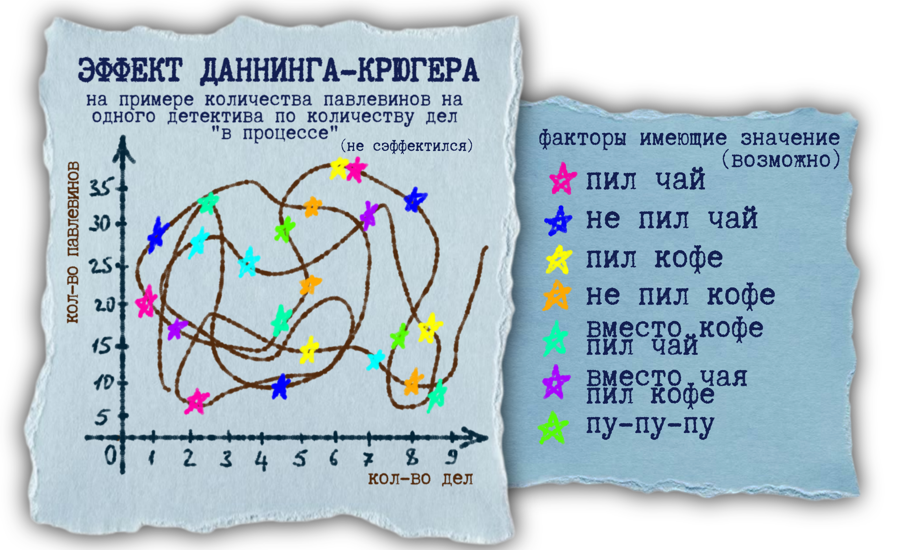
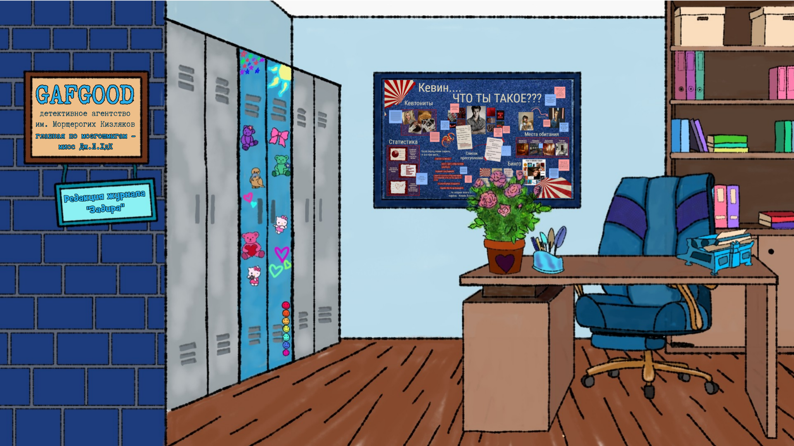
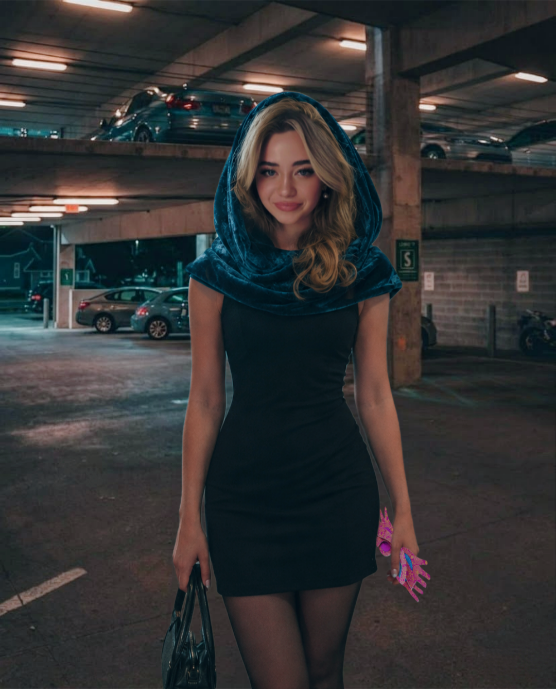

Агентство «Gafgood» разгадывает загадки или загадывает их самостоятельно? И почему мы пишем о себе в третьем лице? Много вопросов и совсем нет ответов? Посмотрите ЧАВО на главной странице, возможно, они там!
Молодое детективное агентство, основанное не ради денег, не ради связей, а исключительно из интереса. Видевшая себя ранее в журналистике и леденцовой комнате Дж.Л.ХдК поняла, что дожидаться вчерашних новостей это прошлый день, а смысл её жизни быть в моменте. И в центре: города, событий, кабинета.
История холдинга «Gafgood»

Основание журнала «Задира»
Уже практически несуществующий к моменту выкупа третьесортный журнал Криминальска «Crime & Cry» был переименован и реорганизован в яркий журнал «Задира». Начавшийся с колонки городских сплетен, дабы оправдать название, навеянное Дж.Л.ХдК фанфиками, совсем скоро стал голосом всех эксцентричных учёных и творцов, которые находят себя за гранью всех категорий.
Информационная деятельность
Журнал «Задира» собрал в себе все андеграундные сплетни города, хоть это понимали и не все, даже сейчас мало кто видит ценную информацию за вымышленными названиями. Но кто-то увидел и начал захаживать в редакцию, чтобы услышать и то, что не было издано...
Открытие агентства «Gafgood»
В момент, когда мисс Дж. Л. ХдК поняла, что внезапно большую часть журнала она начала посвящать загадкам и тайнам Криминальска, а не его более безопасной жизни, встал и вопрос выбора, ведь журнал планировался совершенно не таким, но и новую жизнь в Криминальске она отпускать не хотела. Решение было найдено: лицензия детектива, создание агентства и вторая работа(УРААА(нет)! Днем детектив, в ночи - главред. Ну, или днем главред, а в ночи - детектив. Гибкий график!
Главная по мозгошмыгам — Дж. Л. ХдК
Досье
- Имя: Дж. Л. ХдК
- Возраст: ***
- Знак зодиака:
Рачьё истеричноеРак - Статус: Ироничный детектив
- Детективное агентство: Детективное агентство «Gafgood» им. Морщерогих Кизляков
- Основные методы: совпадения, статистика, спектрально-астральное измерение
- Любимый исполнитель: сэр Шуш

Общая информация
Дж. Л. ХдК – кто это?
«Если вовремя не заняться мозгошмыгами, то ими займутся нарглы, и тогда всем нам будет очень весело».
Полное имя в городе Криминальск неизвестно: иногда она представляется как Джеймс, регистрирует скидочные карты как Лава и подписывает письма «Хорошего дня, Кейт». Однако в городе Криминальск это, в общем-то, обычное дело, поэтому не стоит заострять на этом внимание.
Мисс Дж. Л. ХдК, несмотря на отсутствие гласных в псевдониме, очень даже гласно высказывается, активно принимая участие в жизни города как журналист, детектив, исследователь, волонтёр, идеолог, информатор… в общем деятельности у неё хоть отбавляй. Впрочем, у многих, о ком так говорят, часто не бывает основной деятельности в виде работы, Дж. Л. ХдК же пчёлкой трудится на саму себя: в детективном агентстве и в редакции “Задиры”.
Интервью с главой холдинга
Есть ли кто-то, кто вдохновляет вас в вашей деятельности?
Ох, определённо! Конечно, я могу назвать великие ума массовой и не только культуры, например Шерлок и Майкрофт Холмсы или Доктор Кто. Впрочем, иконой детективного дела для меня стала леди-детектив – мисс Фрайни Фишер. Хотелось бы мне быть такой же как она… думаю мне недостаёт того самого “леди”. Может, заменить мисс на него?
Но главным своим вдохновителем я, конечно, считаю почётную когтевранку – Луну Лавгуд. В честь неё (и собачьих каламбуров, да) было названо агентство, она стала вдохновителем журнала и позволила посмотреть на мир другими глазами, когда “Придира” в последний раз сделала выпуск со спектрально-астральными очками в подарок.
С чего начался журнал “Задира”?
Немного про это я уже сказала, но всё же. Я почти всегда возвращалась к журналистской деятельности. Мне нравится вести репортажи, брать интервью и писать статьи. “Задира”, конечно, была вдохновлена “Придирой”. Криминальск – колоритный город, в котором журналистика, несмотря на то, что всё контролируется людьми “сверху”, может быть не только острой, а ещё и опасной. Однако, я выросла в условиях, где для того, чтобы попасть в кровать требовалось отгадать загадку. Именно поэтому читателям “Задиры” часто приходится “пошевелить извилинами” (верный ответ: потому что это весело, конечно же).
Детективное дело – финальная точка того, чем вы хотели заниматься или это получилось случайно?
На самом деле в моём списке возможных профессий профессии “детектив” никогда не было. Несмотря на то, что я очень люблю того же Шерлока Холмса, мне кажется, что эта любовь больше относится к умственным способностям, нежели к самой деятельности детектива. Расследования меня всегда больше интересовали как “кабинетная” работа… впрочем, как мне кажется, то сейчас она не очень изменилась, ведь большая часть процесса проходит в голове. Хотя для того, чтобы правильно всё увидеть и рассмотреть картинку происходящего, а это не обязательно преступление, зачастую необходимо побывать на месте событий, ведь только тогда есть возможность увидеть то, чего другие не видят… или не хотят видеть.
В общем, да, можно сказать, что случайно. Хотя мне кажется, что в Криминальске каждый журналист рано или поздно станет детективом, всё-таки, если задуматься, это достаточно похожие сферы деятельности, просто в разной обёртке. И, возможно, детективов чуточку больше любят в обществе, даже когда они задают вопросы.
Какие ваши сильные качества?
Наверное, те, что помогают мне выделяться в моей работе?
Во-первых, конечно, умение сопоставлять неочевидное с очевидным, очевидное с очевидным и неочевидное с неочевидным. Когда ты журналист это важно, когда ты детектив-журналист это ещё важнее. Это можно было бы назвать индукцией. Ну или дедукцией, если первичные данные внезапно оказались больше выводов. Впрочем, я оставлю при себе звание эксперта по совпадениям, случайностям и закономерностям.
Во-вторых, умение изучать большие объёмы информации в сжатые сроки (особенно, когда дело касается сплетен). Оперативно изучать. Иногда даже превентивно. Официально подтвержденной информации ещё нет, но она уже на страницах “Задиры”.
В-третьих – умение казаться милой и глуповатой. Прекрасно работает. А ещё втираться в доверие к милым старушкам у подъезда.
Умение посмотреть на мир так, как на него смотрят те, кого не видят. Даже если с помощью спектрально-астральных очков.
Какие ваши слабые качества?
Понятия не имею о чём вы, но у меня собрана какая-то информация, да…
Рак. Гексли. Две работы. Хотела быть мафией. Сахарозная зависимость. Не люблю бабл-ти. Голову, неприкрытую короной, стыдливо покрываю платком.
Есть ли у вас помощники? (желательно не вымышленные)
Конечно. Я называю их свидетелями и информаторами.
Допустим, ещё очки.
Вообще я хорошо отношусь к помощи в работе. Просто пока не задавалась этим вопросом. С другой стороны, что я кому делегирую? Детективом являюсь я и сняться с этой должности я не могу, оформление журнала мне нравится и я его не отдам, остаются только зарплаты и уборка. Впрочем, пока я одна о первом думать как-то не приходится.
Чего не хватает вашему агентству?
Спонсоров: несмотря на то что всё, что с приставкой “без сахара” стоит в нашем мире традиционно дороже, сладкая жизнь тоже дорого обходится.
А ещё хотелось бы расширить гардероб. Впрочем, это тоже относится к спонсорам.
Чего не хватает вам для звания “идеального детектива”?
Короны на голове, чтобы поправлять её после особенно удачных дел, конечно!
У каждого детектива должен быть свой фирменный стиль – какой ваш?
Ох, я жду момента чтобы достать свой пистолет с мыльными пузырями и покорить им весь Криминальск!
Конечно, первое, это методы, которыми я пользуюсь: если статистика и совпадения условно подвластны всем, то взглянуть на мир сквозь линзы спектрально-астральных очков уже сложнее. Всю философию мозгошмыгов и шифровки бундящих шиц я, конечно, ещё не познала (потому “Задира” всё ещё по смыслу доступна почти всем), но я стремлюсь! К слову, здесь же можно назвать и спектрально-астральные очки.
Ох, и я совершенно не признаю охотничью кепку как символ детективного дела. По мне так лучше иметь что-то своё. А ещё лучше что-то многофункциональное. Для себя я такими сделала платки, ведь их можно носить как угодно: на голове, на шее, на руке, на поясе. Мало того ими можно перевязывать раны… ну или связывать подозреваемых.
Примечания
Список правил и принципов
(могут переписываться под настроение, лишь бы не нарушались)
- Сначала прочитать правила, а потом задавать вопросы.
- Сначала то, что интересно, а потом всё остальное.
- Сначала разгадать загадку, а потом попасть домой.
- Логика это искусство.
- Всё, что было написано когда-то в "Придире" - true, только вы ещё этого не поняли.
- Всё что пишется сейчас в "Задире" - true, только вы не хотите это принимать.